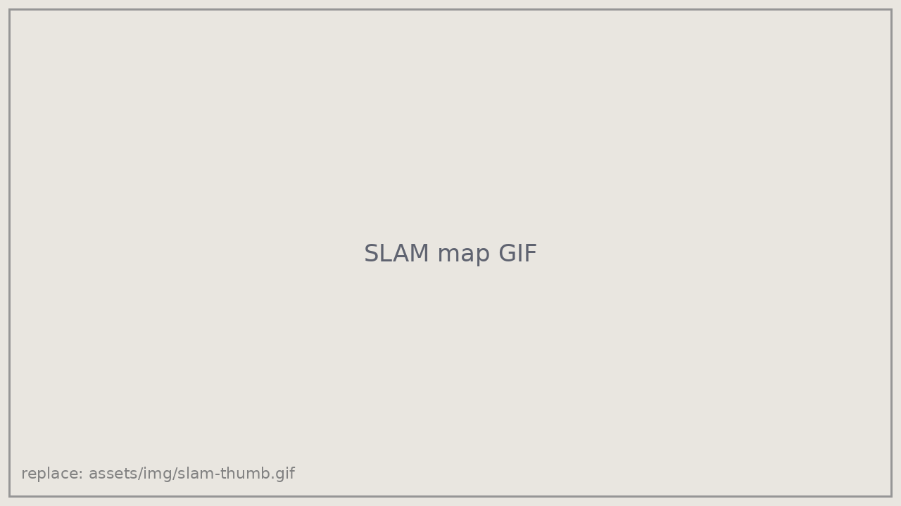
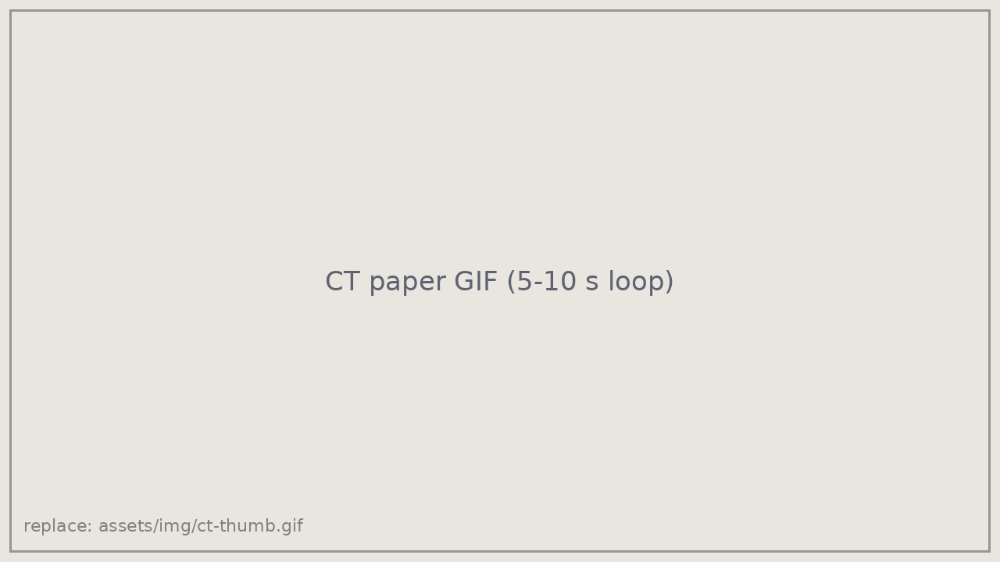
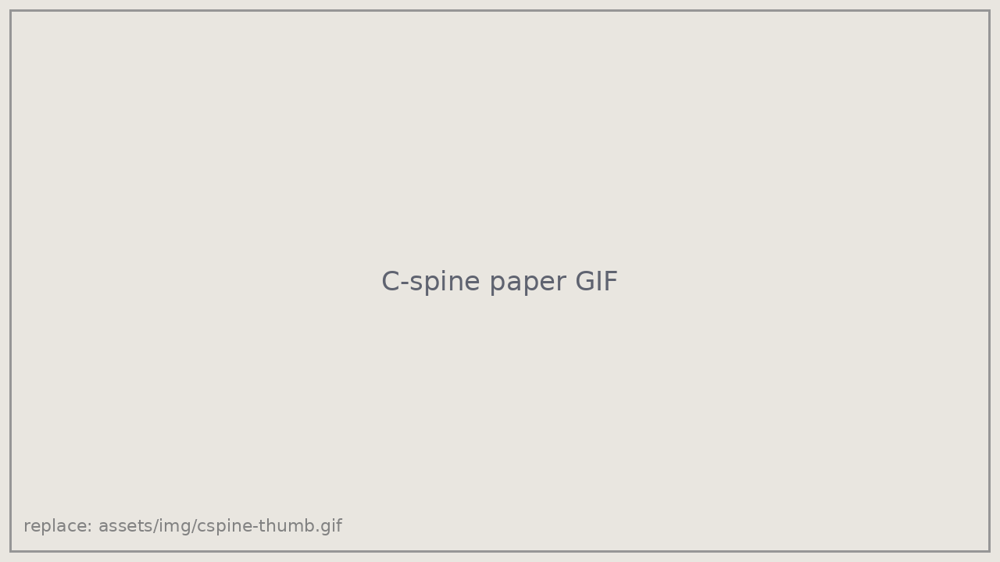
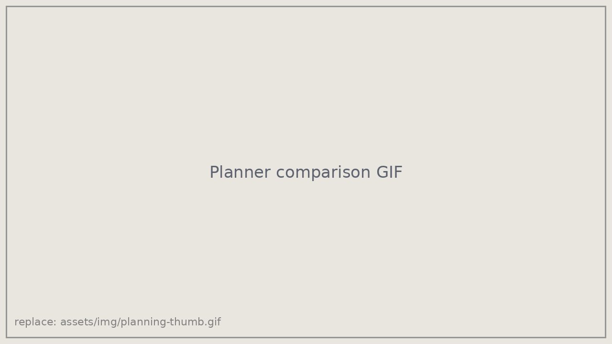
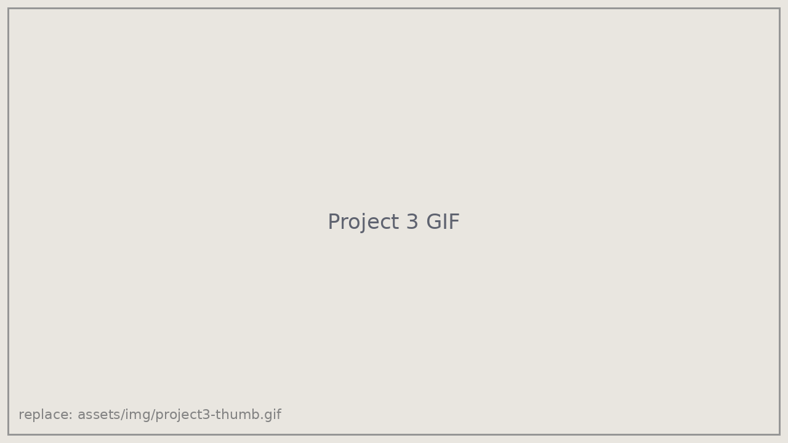

LiDAR–IMU SLAM
Fused IMU and LiDAR data to estimate the robot's trajectory with Kabsch-based scan alignment, then built occupancy grid maps of the environment.
Details →
Robotics Researcher · Advanced Robotics and Controls Lab (ARCLab), UC San Diego
I build controllers and planners that let robots work safely in contact with people, from autonomous needle insertion inside a CT scanner to bimanual spine stabilization on a humanoid. My work spans optimal control, motion planning, state estimation, and real-hardware integration.
Two papers under review at IEEE ICRA 2027.

A robotic arm that works inside a CT scanner, senses the patient's breathing, and times needle insertion to the safe window of the respiratory cycle while compensating for signal and actuation delay.

Two-arm control that holds a patient's head and neck in line while they are rolled, a key step in casualty care. Demonstrated on a Unitree G1 humanoid.
Selected technical projects in estimation, mapping, and planning.

Fused IMU and LiDAR data to estimate the robot's trajectory with Kabsch-based scan alignment, then built occupancy grid maps of the environment.
Details →
Implemented and compared A*, RRT*, and OMPL planners in 3D environments, measuring path quality and planning time. [Edit to match your project.]
Code →
[EKF / state estimation, diffusion model, or humanoid control in MuJoCo. One or two sentences on the problem and your result.]
Code →* Equal contribution